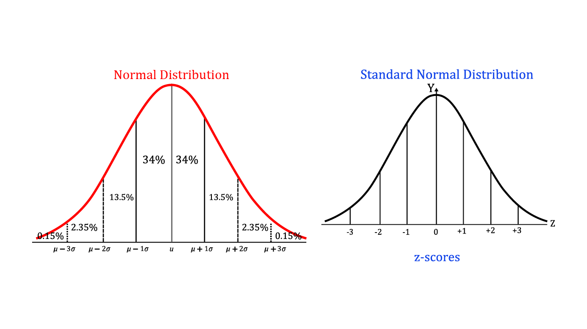

Abstract: The Gaussian distribution, also known as the normal distribution, plays a pivotal role in various fields, ranging from statistics and probability theory to physics, finance, and machine learning. This paper aims to provide a comprehensive understanding of the Gaussian distribution, exploring its meaning, mathematical derivations, and simulations. We delve into the origins of the Gaussian distribution, its key properties, and the central limit theorem, which underpins its ubiquity in diverse domains. Additionally, we present derivations of the probability density function and cumulative distribution function, shedding light on the fundamental concepts that define this distribution. To enhance understanding, we complement the theoretical aspects with practical simulations that illustrate the Gaussian distribution in action.
The Gaussian distribution, named after Carl Friedrich Gauss, is a continuous probability distribution that is symmetric, bell-shaped, and characterized by its mean and standard deviation. This distribution is often encountered in natural phenomena, making it a fundamental concept in probability theory and statistics. Its ubiquity is attributed to the central limit theorem, which states that the sum (or average) of a large number of independent, identically distributed random variables tends to follow a Gaussian distribution.
Carl Friedrich Gauss (30 April 1777, Brunswick - 23 Febrary 1885, Gottinga) was a prodigious mathematician,
astronomer, and physicist. Gauss's mathematical abilities, were evident since his young age. In his teens, he
made significant contributions to number theory. At the age of 19, Gauss independently discovered the method of
least squares, but his work in number theory culminated in his doctoral thesis, "Disquisitiones Arithmeticae,"
published in 1801, which remains a foundational text in the statistical field. Gauss's career continued to
flourish, he also contributed to physics, particularly in the understanding of magnetism and the Earth's magnetic field.
Gauss's legacy endures not only through his theorems and formulas but also in the broader application of his
mathematical methods across various scientific disciplines. His impact on mathematics, astronomy, and physics
solidifies his status as one of the most influential scientists in history. His influence extended beyond his
research; he mentored numerous students who went on to become prominent mathematicians and scientists.
Gauss's significance in the development of mathematics is underscored by the broad range of fields in which his ideas continue to shape research and applications. His methods and theorems remain fundamental in both pure and applied mathematics, ensuring his enduring legacy in the scientific community. The significance of his work lies in several key areas:
Gauss's work in statistics had a profound impact on the field, providing a systematic and rigorous approach to estimating parameters in mathematical models. Here are key aspects of Gauss's contributions to statistical methods:
The Gaussian Distribution, also known as the normal distribution or bell curve, is a probability distribution
that is symmetric and characterized by its bell-shaped curve. It represents the probability distribution of a
continuous random variable which shape is completely determined by two parameters: the mean \(mu\) and the standard
deviation \(\sigma\).
The Probability Density Function (PDF) of the Gaussian Distribution is given by the formula:
$$ f(x; \mu, \sigma) = \frac{1}{\sqrt{2 \pi \sigma^2}} * e^{-\frac{(x-\mu)^2}{2\sigma^2}} $$
The figure shows the Gauss Distribution PDF variation at \(mu\) and \(\sigma\) change. From the figure it is easy
to see how the mean \(\mu\) locates the center of the distribution, while the standard deviation \(\sigma\)
controls the spread or dispersion.
All properties can be derived from the study of its function analytic:
The standardized normal distribution, also known as the Z-distribution or standard normal distribution, is a
special case of the normal distribution. It has a mean \( \mu = 0) \) and standard deviation \( \sigma = 1 \).
The probability density function (PDF) of the standardized normal distribution is denoted by \( \Phi(z) \)
where \( z \) is the tandardized variable.
The PDF of the standardized normal distribution is given by:
$$ \Phi(z) = \frac{1}{\sqrt{2 \pi}} e^{- \frac{z^2}{2}} $$
The standardized normal distribution is important in statistics because it allows for the transformation of
any normal distribution into a standard form. This transformation is achieved by subtracting the mean and
dividing by the standard deviation.
For a random variable \( X \) following a normal distribution with mean \( \mu \) and standard deviation \( \sigma \),
the standardized variable \( Z \) is calculated as:
$$ Z = \frac{X - \mu}{\sigma} $$
The use of the standardized normal distribution simplifies statistical calculations and comparisons, as it
provides a common scale for normal distributions with different means and standard deviations. Tables of the
standardized normal distribution, often referred to as Z-tables, are widely used in statistical inference for
looking up probabilities associated with specific Z-scores.
The z-score indicates by how many standard deviations the random variable \(x\) deviates from the mean.
It gives the relative position of \(x\) with respect to the center of the distribution. E.g.: a z-score of 2
means that between the mean and the variable \(x\) there are 2 standard deviations.
In other words, if we have a normal distribution the probabilities corresponding to the areas subtended by the
normal curve between two extremes \(x_1\) and \(x_2\) can be calculated by transforming the distribution into
the standard normal distribution. These probabilities are reported in a table.
This avoids the need for complex integral calculations to find the probabilities of a variable \(X\) taking values
within certain intervals. It also allows immediate comparison between different distributions.

In real-world scenarios, many phenomena exhibit a Gaussian-like behavior, making it a suitable model for various applications.
For the simulation part, I made use of a dataset found on the net StudentsPerfomance.csv that collects the results obtained by high school United States students on end-of-year exams. The dataset is made up the following columns: gender, race/ethnicity, parental level of education, lunch, test preparation course, math score, reading score and writing score.
First, to familiarize with the dataset and its structure, I visualized the first few rows and then had a statistical overview returned.
| gender | race/ethnicity | parental level of education | lunch | test preparation course | math score | reading score | writing score |
|---|---|---|---|---|---|---|---|
| female | group B | bachelor's degree | standard | none | 72 | 72 | 74 |
| female | group C | some college | standard | completed | 69 | 90 | 88 |
| female | group B | master's degree | standard | none | 90 | 95 | 93 |
| male | group A | associate's degree | free/reduced | none | 47 | 57 | 44 |
| male | group C | some college | standard | none | 76 | 78 | 75 |
| math score | reading score | writing score | |
|---|---|---|---|
| count | 1000.00000 | 1000.000000 | 1000.000000 |
| mean | 66.08900 | 69.169000 | 68.054000 |
| std | 15.16308 | 14.600192 | 15.195657 |
| min | 0.00000 | 17.000000 | 10.000000 |
| 25% | 57.00000 | 59.000000 | 57.750000 |
| 50% | 66.00000 | 70.000000 | 69.000000 |
| 75% | 77.00000 | 79.000000 | 79.000000 |
| max | 100.00000 | 100.000000 | 100.000000 |
As second step, I simply build three histograms, one for every discipline, and visually check whether data seems normally distributed. The three histograms look like Gaussian distibution! Let us go further and try to fit a bell curve over a histogram.
Now as we know that the data looks Gaussian, we can try to fit a bell curve to prove it. For that, we will first calculate mean and standard deviation, then generate a normally distributed array and finally plot the array curve.
| Estimated mean | Estimated standard deviation | |
|---|---|---|
| Math parameters | 66.089 | 15.155496659628165 |
| Reading parameters | 69.169 | 14.59289001534652 |
| Writing parameters | 68.054 | 15.188057281956757 |
In conclusion, the Gaussian distribution is a cornerstone in probability theory and statistics, playing a crucial role in modeling diverse phenomena. This paper has explored the meaning of the Gaussian distribution, presented derivations of its probability density and cumulative distribution functions, and highlighted the significance of the central limit theorem. Simulations have been introduced as a valuable tool for enhancing understanding and visualizing the Gaussian distribution in practice. As we continue to encounter the Gaussian distribution in various disciplines, a solid grasp of its foundations and applications remains essential for researchers, analysts, and practitioners alike.